Background: Previous literature has reported an association between alcohol use and smoking. This study examined whether level of alcohol use in the past 12 months predicted cigarette use among U.S. adults aged 18-65, and whether this association was modified by race, adjusted for income and age.
Methods: 2015-2016 NHANES data were analyzed. Alcohol usage was divided into four categories: No Alcohol Use, Low Alcohol Use, Moderate Alcohol Use, and High Alcohol Use. Smoking status was operationalized as binary variable, income (14-level) and race (6-level) as categorical variables, and age as a continuous variable. Bivariate regression was conducted between alcohol use and smoking status. Multivariable logistic regression was used to adjust for income and age and to test for differences in racial group strata.
Findings: Data from 1,440 respondents were analyzed after excluding those who refused, had missing data, or answered “don’t know.” We found that levels of alcohol usage significantly predicted smoking status at the 5% significance level (Model 1, X2 = 33.5250, p < 0.0001). We also found that levels of alcohol usage significantly predicted smoking at the 5% significance level, adjusted for income and age (Model 2, X2 = 29.8135, p < 0.0001). We did not find that race modified the association between levels of alcohol use and smoking status, adjusted for income and age (Model 3, x2 = 8.7703, p = 0.8892).
Interpretation: Alcohol consumption level was significantly associated with smoking status at the 5% significance level and remained significant after adjusting for income and age (Model 2). This association was not modified by race (Model 3), which refuted our research hypothesis on the effects of race.
Conclusion: Because our results did not show that race significantly modified the association between alcohol use and smoking, public health researchers may need to focus more on other demographic risk factors, such as income and age, when implementing alcohol and smoking abatement interventions.
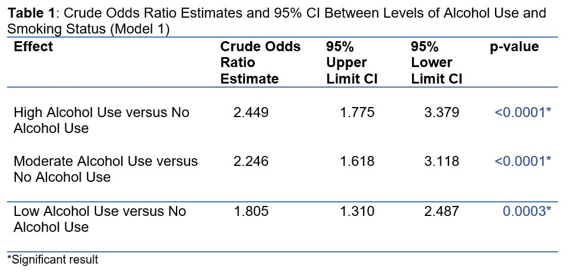
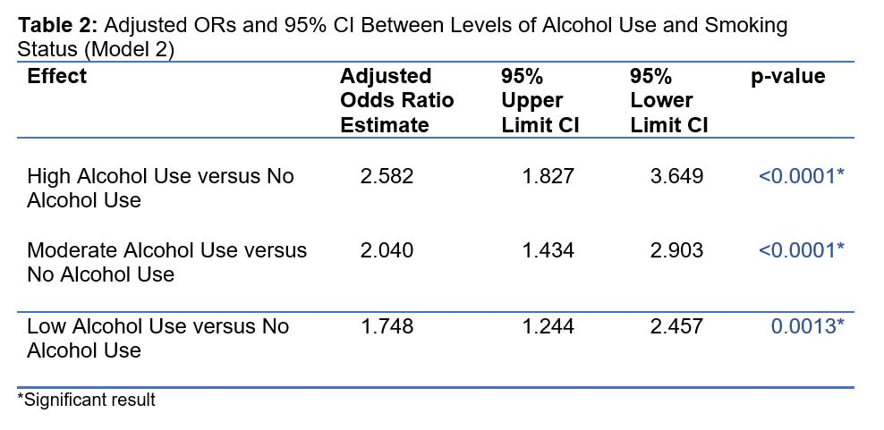
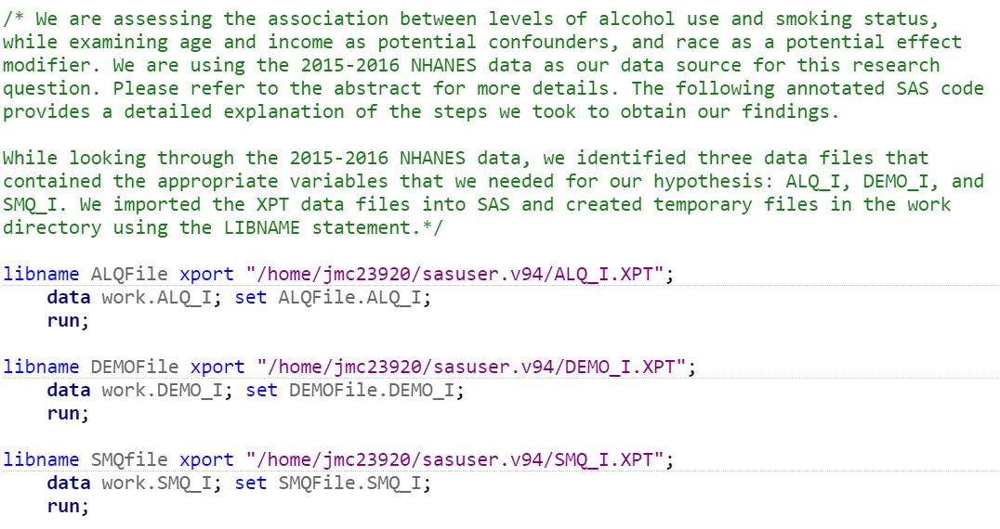 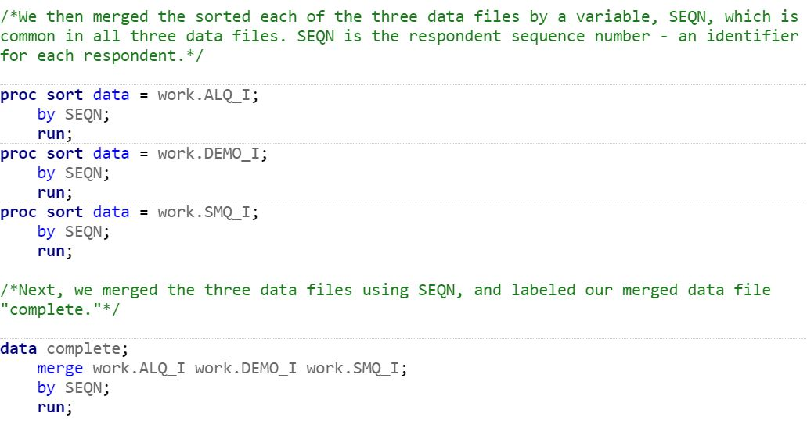 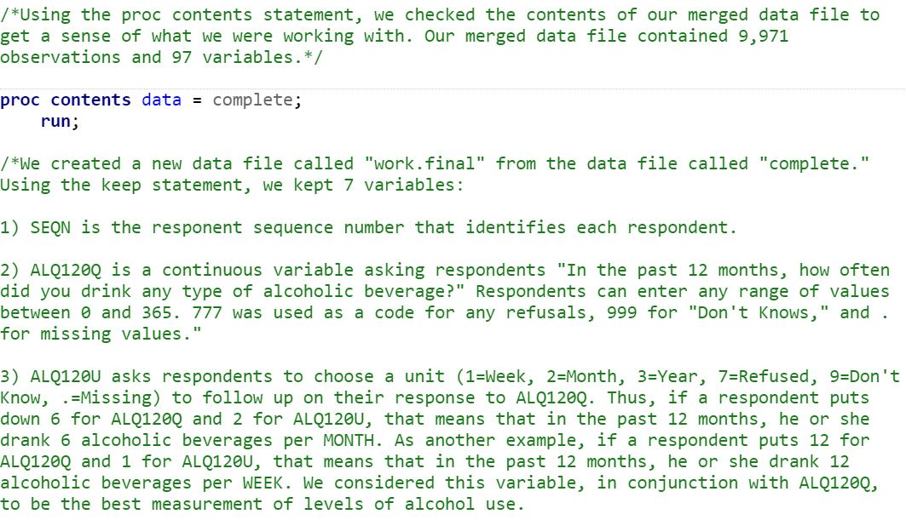 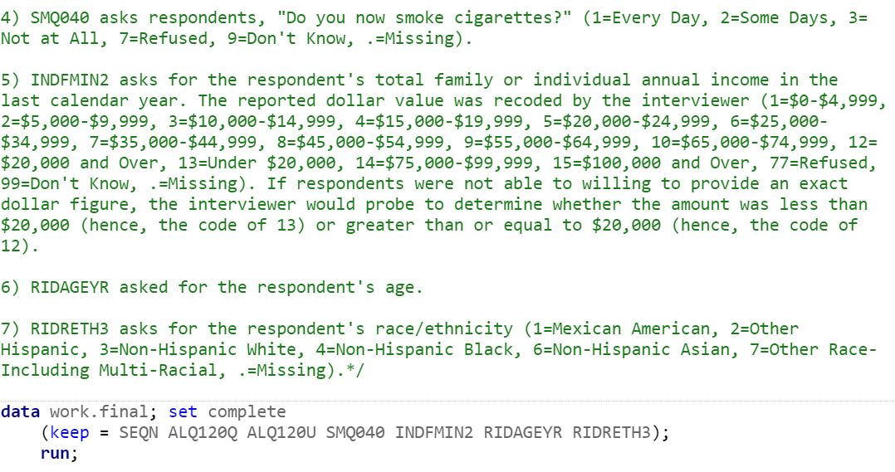 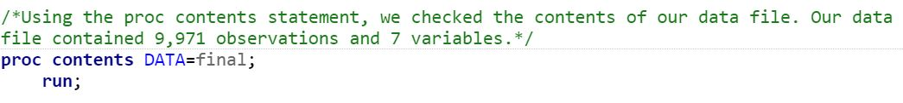 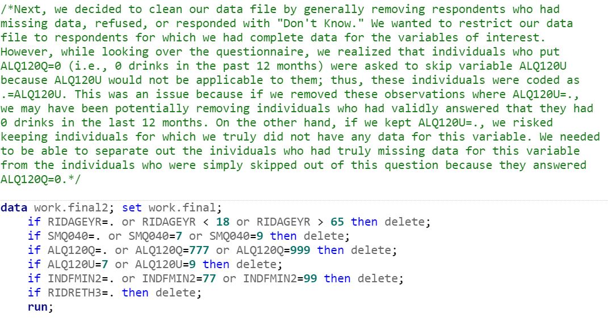 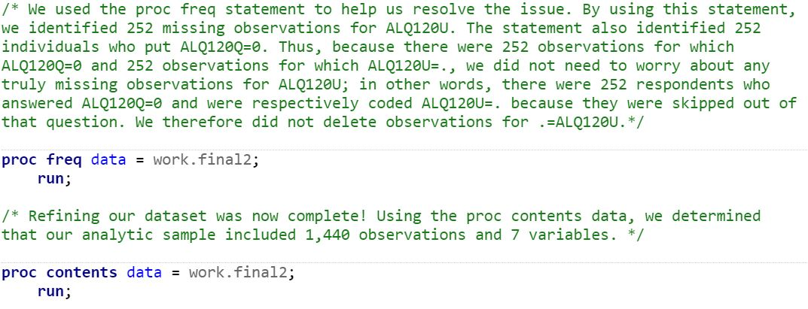 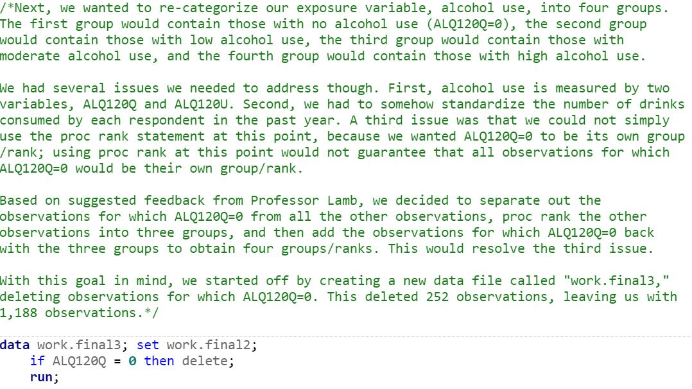 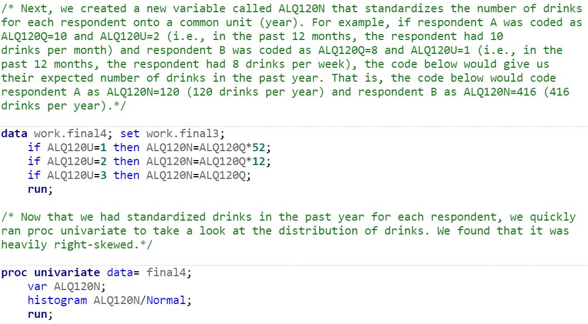 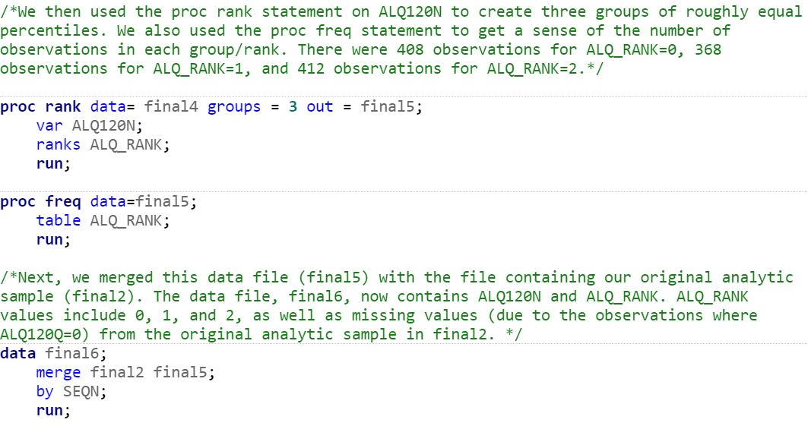 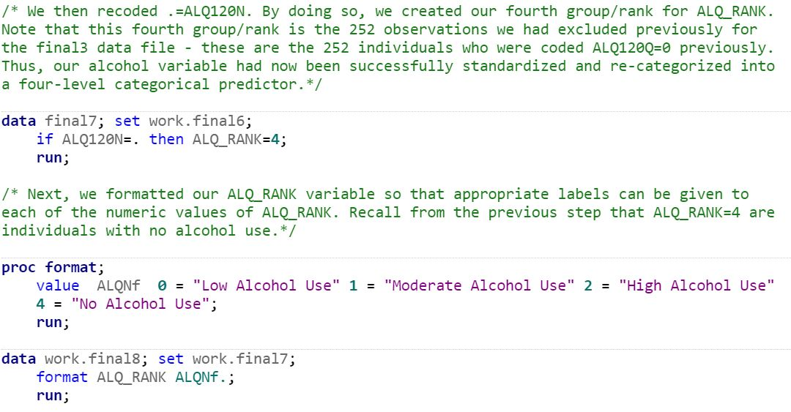 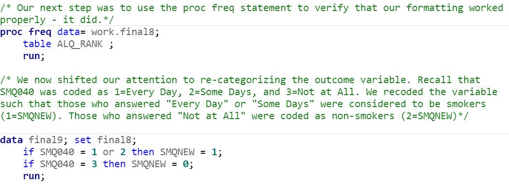 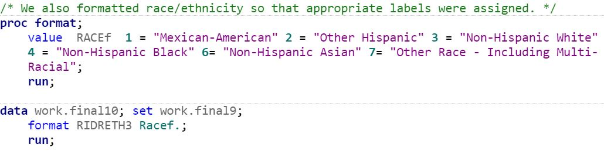 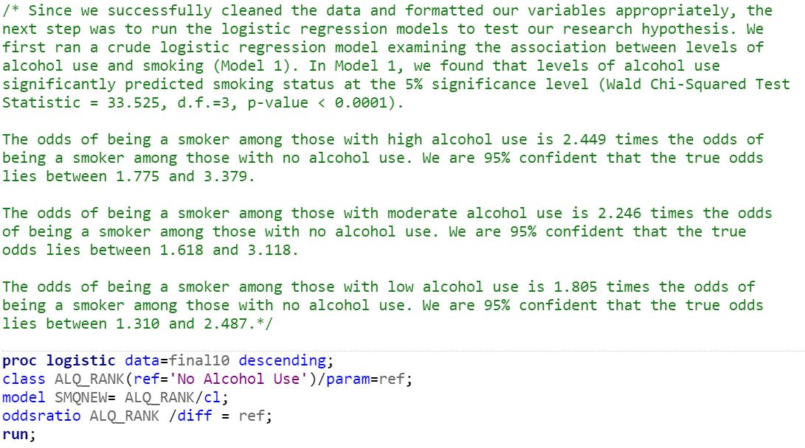 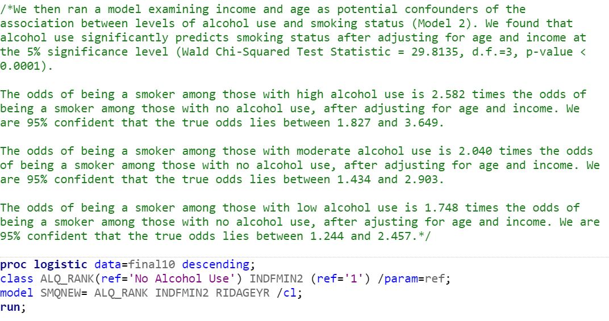 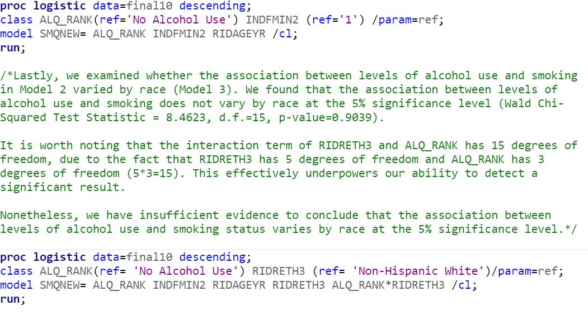